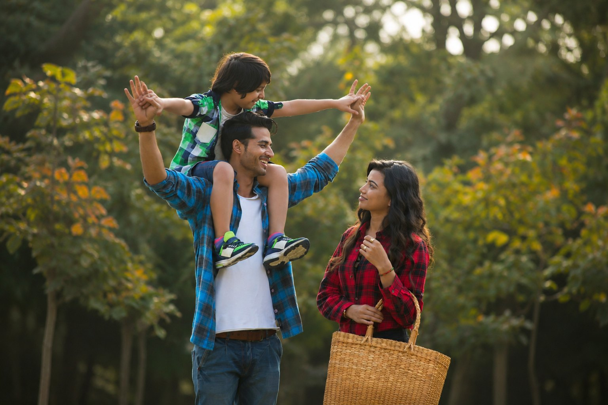

You are not alone
If you or someone you know needs help, call 1800RESPECT — 1800 737 732
Why we exist
Human rights and health, for families caught between cultures.
ACHRH is an NGO and think tank founded in 2012 that proposes innovative, evidence-led solutions to build safer and stronger families — with a particular focus on preventing dowry abuse, family violence and coercive control in migrant communities.
Fields of action, not a catalogue of pages.
Five areas of work — research, prevention and participatory art — that reinforce one another.
Preventing Dowry Abuse
National advocacy, education and law reform to end dowry-related family violence.
Respectful Relationships
Mutual Relational & Cultural Respect workshops in community settings.
Community Theatre & Arts
SNEH Theatre and Natak Vihar — using art in service of human rights.
Community / International Work
Partnerships across Australia and India for cultural change.
Research & Advocacy
Academic papers and parliamentary submissions that move policy.
Explore all of our work
Community theatre
“There is no higher form of contact with humans than art.”
We use participatory theatre in service of human rights — to find community solutions to family violence.
What we did — and what changed because we acted.
Built a national campaign, delivered community education and participatory theatre, and made evidence-based submissions to government.
Dowry abuse was recognised in Victorian family-violence law, and coercive control entered national policy.
A decade of advocacy, milestone by milestone.
A decade of community, theatre and advocacy.
A curated wall of ACHRH moments — rotating slowly, one at a time.
Read the evidence.
What’s happening now.
Our founder
Professor Manjula O’Connor
Founding Director and psychiatrist. Prof O’Connor has led ACHRH’s work on dowry abuse, coercive control and migrant family wellbeing — bridging clinical practice, research and advocacy.
Support our work
Help build safer, stronger families.
Your support powers education, research and participatory art that prevents harm before it happens.